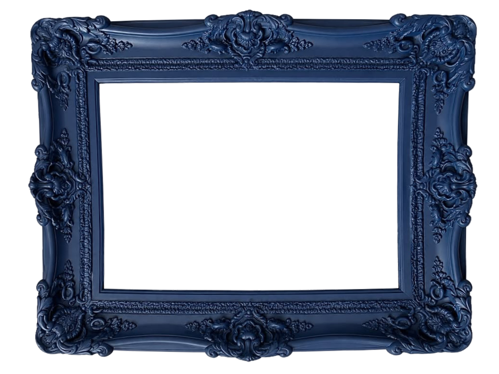

Who What Wear january
Haz clic y descubre la portada
Desliza sobre cada foto para revelar la imagen
Makó dirigió creativamente la sesión evocando la estética de un libro ilustrado infantil y muñecas de papel, combinando dulzura con un toque oscuro y surrealista.

El vestuario incluyó piezas de la colección Primavera/Veranode Gucci